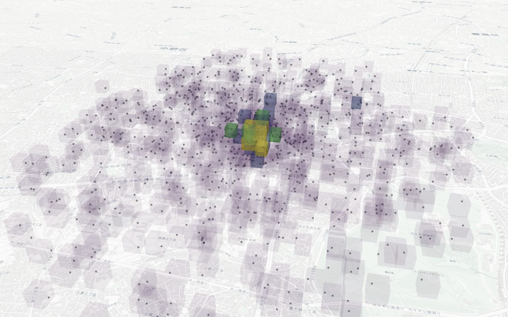

Voxel foundation
Entity aggregation, adaptive display, Spatial IDs, and layer-aware statistics established the core.
CesiumJS plugin 1.3.7 stable
Turn entities already in your Cesium scene into legible 3D voxel heatmaps. Keep the globe, camera, and data pipeline you have.
Need every control? Open the full Playground →install cesium-heatbox@1.3.7

Current release
An audited stable release with reproducible packages, synchronized documentation, and the official Spatial ID provider included.
Spatial ID includedThe official Ouranos-GEX provider ships in lazy chunks with no extra consumer setup.
Expressive classificationQuantile, Jenks, threshold, color, opacity, width, and legends share one model.
Time-aware analysisTemporal slices, interpolation, lazy sources, and worker preprocessing are built in.
Verified deliveryCommonJS, ESM, UMD, types, provenance, and third-party notices are audited together.
How it fits
Use the data sources and Cesium entities your application already owns.
Choose voxel dimensions, classification, layers, time slices, or Spatial IDs.
Heatbox plans a bounded, camera-aware set of boxes and outlines for the scene.
Small surface area
Defaults are usable, while classification, adaptive rendering, temporal data, and aggregation stay available when the dataset demands them.
Walk through Quick Start// viewer and entities stay under your control const heatbox = new CesiumHeatbox.Heatbox(viewer, { voxelSize: 100, classification: { scheme: 'quantile', colorMap: 'viridis' }, maxRenderVoxels: 5000 }); heatbox.createFromEntities(entities);
Capabilities
Linear, log, quantile, Jenks, threshold, and multi-target styling.
COLOR / OPACITY / WIDTHViewport-aware selection, LoD, density controls, and render budgets.
PERFORMANCETime slices, interpolation, lazy data sources, and worker preprocessing.
TIME SERIESSpatial ID input, layer aggregation, diagnostics, and QA metrics.
ANALYSISProject evolution
From voxel aggregation to production-ready analysis, each release has extended the same compatible core.
Entity aggregation, adaptive display, Spatial IDs, and layer-aware statistics established the core.
Declarative schemes, palettes, statistics, and performance gates became a stable public API.
Temporal slices, interpolation, lazy loading, and worker preprocessing extended the analysis model.
Camera-aware rendering, bounded updates, reproducible packages, and release audits hardened delivery.
Starts with a completed sample. Full Playground →